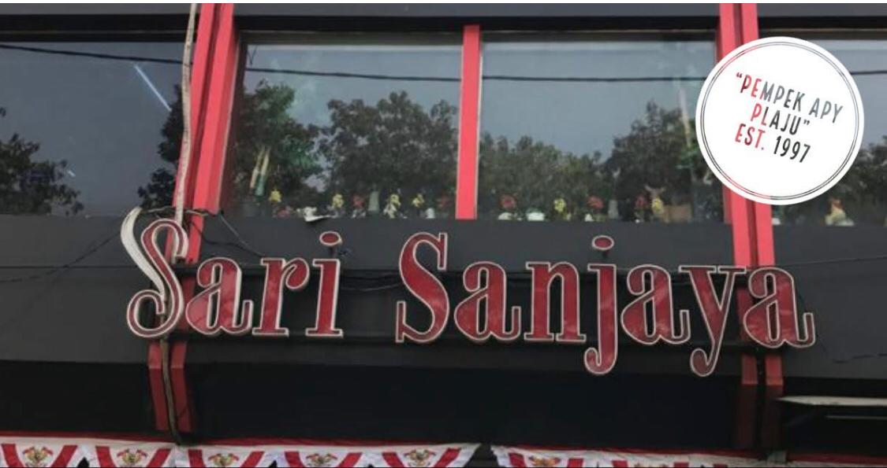
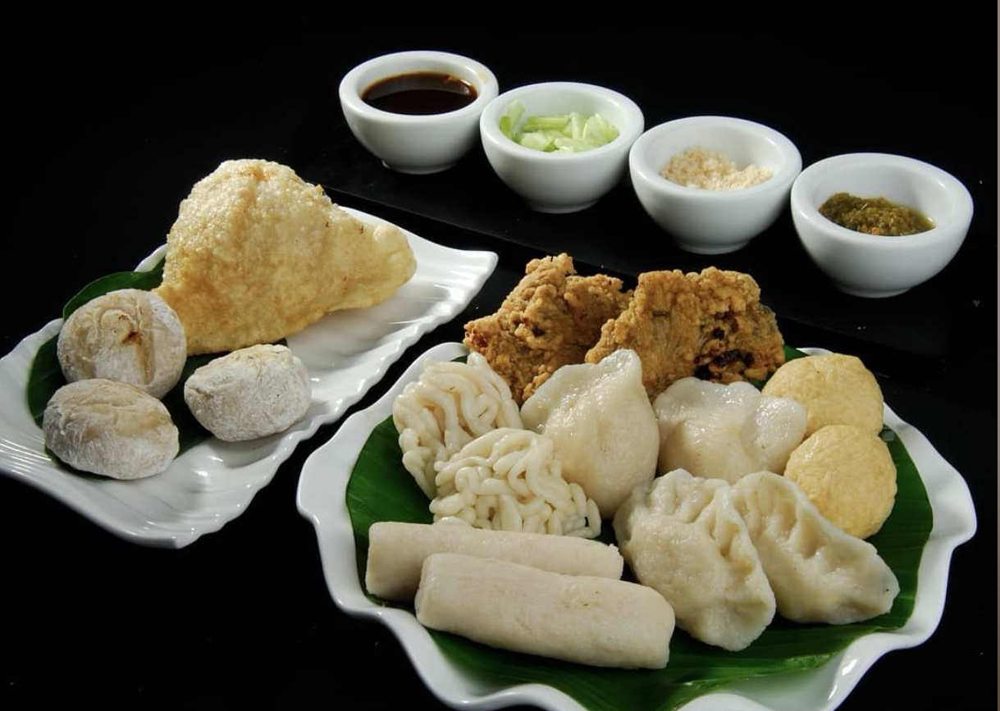
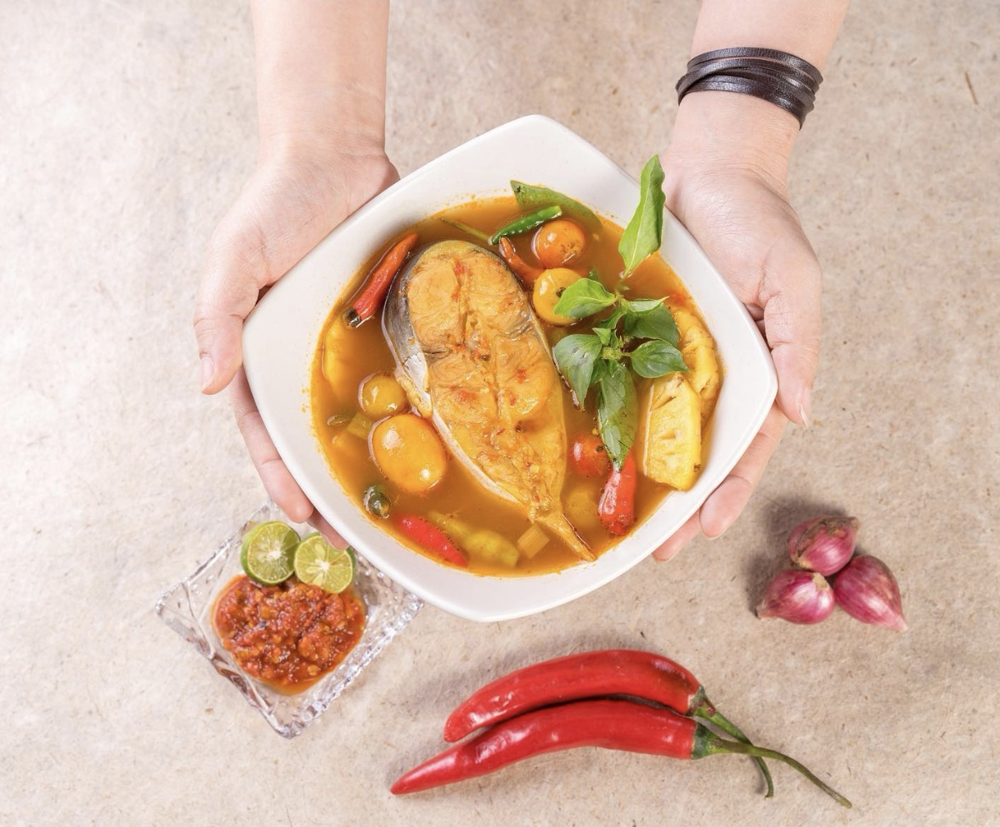
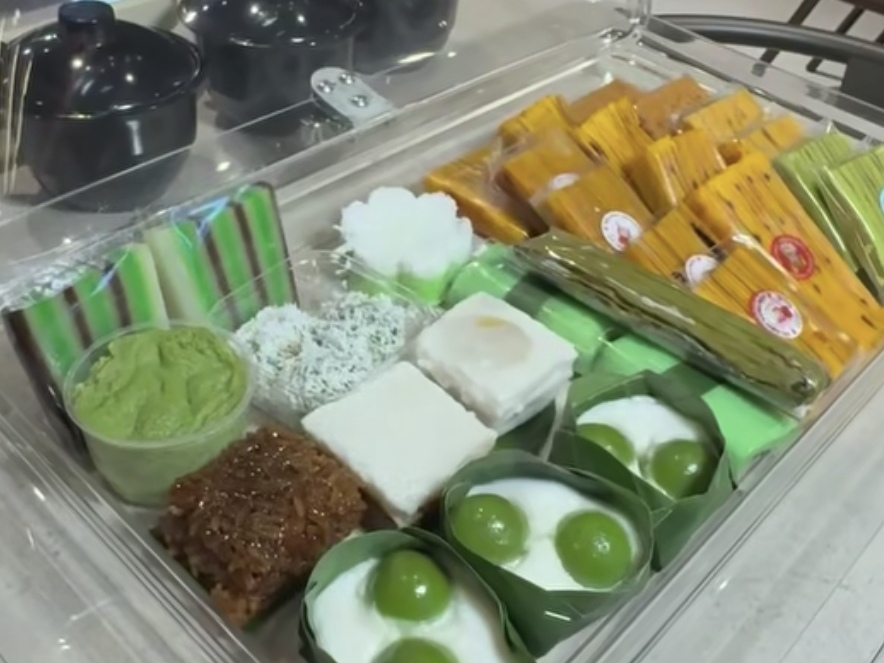
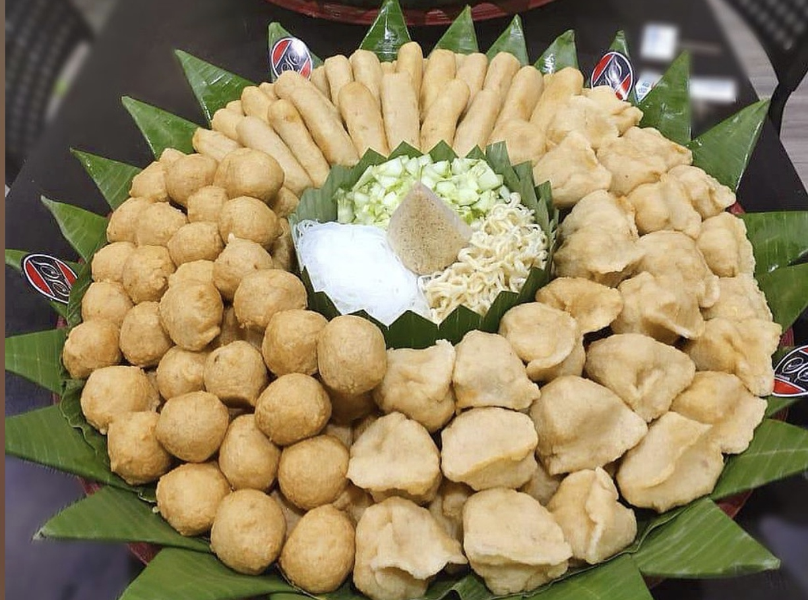
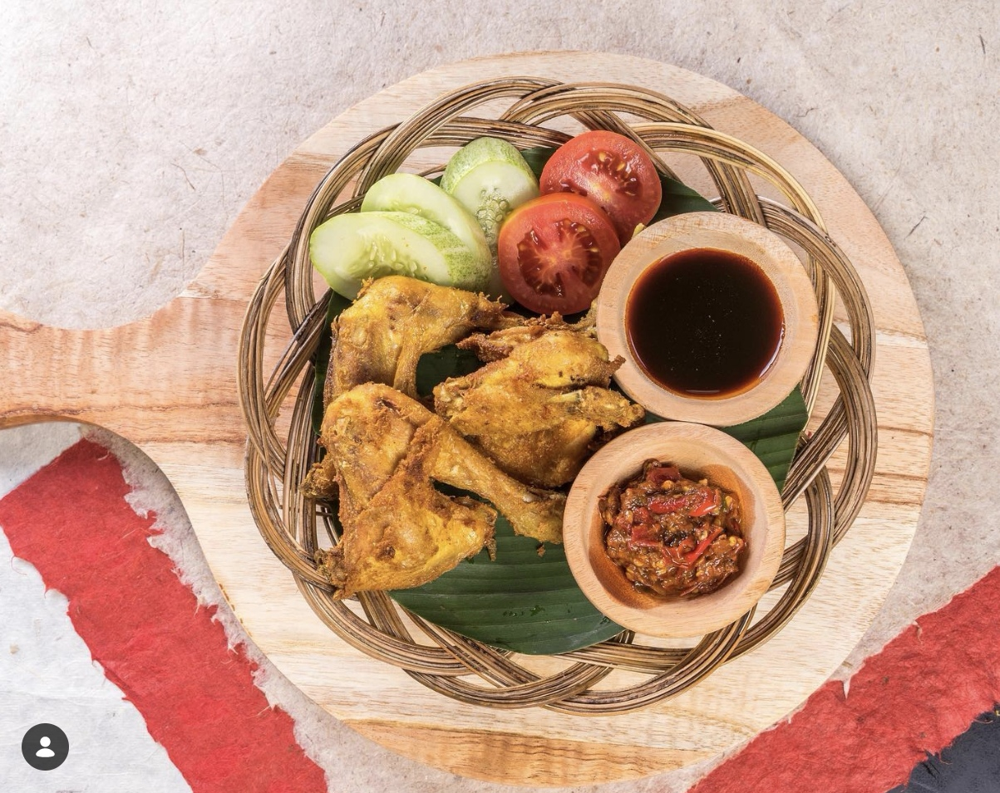
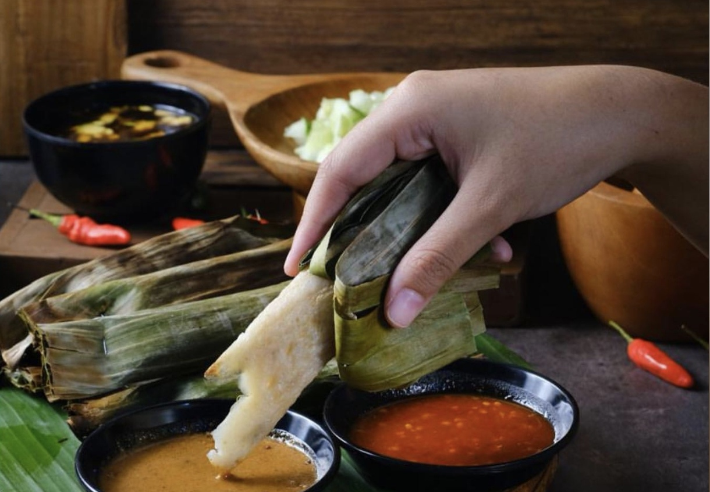

Nikmatnya Kuliner Nusantara dalam Satu Tempat
Lihat Menu Pesan via WhatsAppRestoran Sari Sanjaya menghadirkan beragam pilihan kuliner Indonesia dalam satu tempat.
Menu yang tersedia meliputi Pempek Palembang, Masakan Nusantara, dan berbagai Jajanan Pasar.






📍 Kelapa Gading, Jakarta Utara
Cabang Pusat
Pesan via WhatsApp